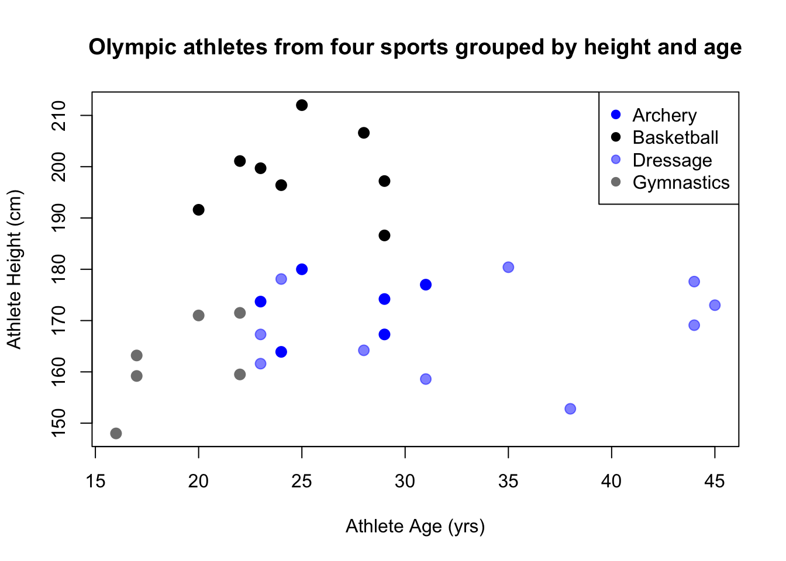
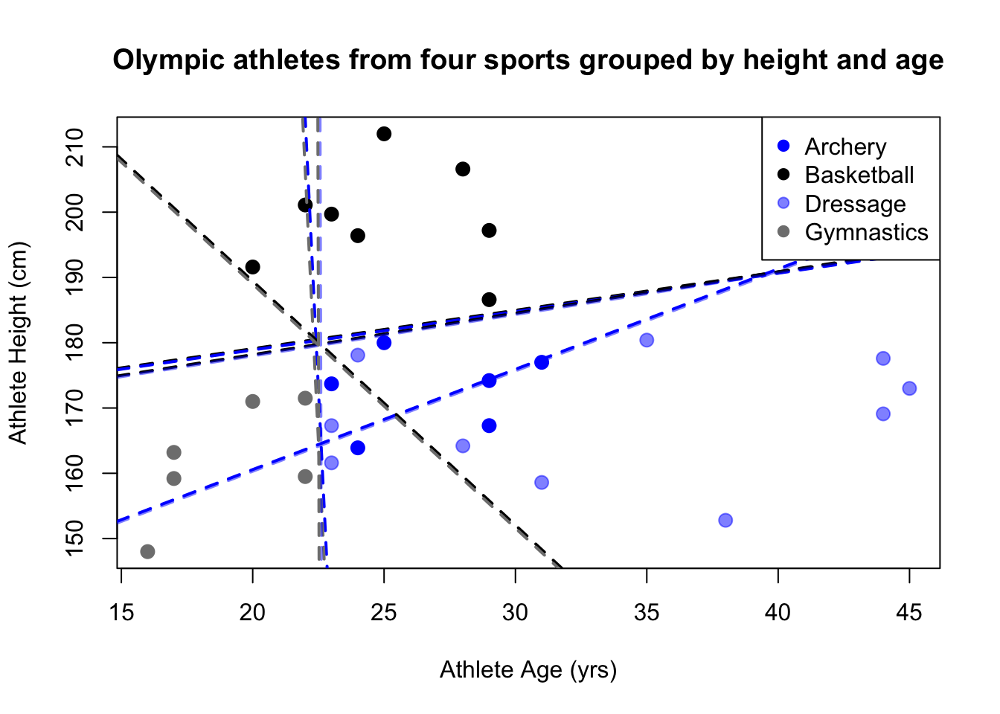

The generalized linear model (GLM) framework allows us to model data of many different types:
Continuous data — either ratio-level or interval-level — can be modeled with ordinary least squares (OLS) regression, or less commonly with GLM models using e.g., Gamma or exponential distributional assumptions.
Discrete data — especially non-negative count data — can be modeled with Poisson or negative binomial regressions.
Binary or dichotomous data — categorical data with two levels — can be modeled with a Bernoulli or binomial distribution, usually with logistic or probit link functions.
We have studied each of these models. But gaps remain… consider two more data types which we might encounter in our careers:
Multinomial data — that is, categorical data with more than two levels.
Ordinal data — data where the levels have a clear rank order, but do not have a meaningful or consistent sense of “distance” between levels.
Both of these data types may seem challenging targets for regression analysis, but surprisingly, the GLM framework provides robust support for each of them. Because multilevel data can be expressed as a collection of 1/0 indicator variables, both of the data types above require multivariate regression models, which seek to simultaneously predict the status of multiple “\(Y\)s” for each row of “\(X\)s”. Just as dichotomous variables separates into two classes, polytomous variables separate into many classes, and so these response variables and their regressions are also referred to as polytomous data and polytomous models.
Polytomous models are described and fit just like any other GLM. However, I admit that their interpretation and use are more complicated than most models, and their assumptions may seem even less realistic than usual. We may hope that the scaffolding erected in the earlier sections will allow you to continue building your skills in this vertiginous final stage.
Multinomial regression modeling
Suppose a response variable which may assume any of \(J\) different levels (subscripted with \(j\)), varying over \(n\) observations (which we could split into subsample sizes by level: \(n_1, \ldots, n_J\)). For example, we could be looking at athletes who compete in one of four Olympic sports: archery, basketball, gymnastics, and dressage. Assuming that the order of observations are unimportant, we can express the data through the aggregate counts:
\(j\)
\(Y=j\) means:
\(n_j\)
1
Archery
6
2
Basketball
8
3
Gymnastics
10
4
Dressage
6
If we were treating this data as a univariate exercise, we could model the probability that future athletes belong to each category using the multinomial distribution, a straightforward extension of the binomial distribution. The parameters of the multinomial distribution are \(n\), the total number of observations (which we usually assume to be fixed), and \(\pi_1, \ldots, \pi_{J-1}\), the probabilities of observing any of the first \(J-1\) levels (the probability of the last level is fixed, since \(\pi_J = 1 - \sum_{j=1}^{J-1} \pi_j\)). It won’t surprise you that the maximum likelihood estimators in this case are simply the relative frequencies of the data:
The reader may be forgiven a yawn: unsurprisingly, our best guess for how often each category will be observed is how often each category was observed in our sample.
But what if the probabilities of observing each response level shifted from observation to observation, in a manner which could be predicted by studying a matrix of covariates \(\mathbf{X}\)? Surely we can use these covariates in a regression to predict the probabilities that \(Y\) will belong to each level \(j = 1, \ldots, J\). But it’s not so simple.
We can’t allow the fitted probabilities for the first \(J-1\) levels to sum to more than 1, which would create an impossibility for our final prediction in level \(J\).
We would like to avoid leaving information “on the table” by running many different regressions which each only use a subset of our data. Ideally, we build one model where every observation adds value to every prediction.
We need to beware inconsistency. If we create many different models which choose between pairs of levels, we might find that the regression which chooses between levels 1 and 2 and the regression which chooses between levels 2 and 3 create modeling predictions which are then contradicted by the model choosing between levels 1 and 3.
There are several ways to accomplish these goals. Below, I’ll present one of the more common models, called the multinomial baseline logistic model.
Multinomial baseline logistic model
Suppose now that every observation of \(Y\) is paired with a vector of predictors, \(X_1, \ldots, X_k\). (We seem to be on familiar ground.) We will choose one level, the “baseline” or “pivot” level, which will act as our comparison point for the other \(J-1\) levels.
We will run \(J-1\) simultaneous logistic regressions which predict whether an observation belongs to each level \(1, 2, \ldots, J-1\) (“success”) as opposed to level \(J\) (“failure”). Each regression will receive its own set of betas.
We will fit the models simultaneously, so that we can constrain the fitted probabilities to sum to 1, and so every observation provides evidence toward every set of betas.
We will only predict a few of the possible pairwise level comparisons, and then estimate the odds ratios for other level comparisons through transitivity among the results we did compute.
Note
Suppose a categorical response variable \(Y\) which assume several levels \(1, \ldots, J\) and a matrix of \(k\) predictors \(\mathbf{X}\) (plus a vector of 1s) from a sample of \(n\) observations.
Select one of the levels (say \(j=J\), the last level), and label it the “baseline” level.
For each remaining level \(j\), construct a binomial logistic regression which models the conditional probability that \(Y=j\)given that either\(Y=j\)or\(Y=J\).
If we define \(\pi_{ij}\) to be the probability that \(y_i=j\), then the link function for each logistic regression will be:
These logistic regressions describe predictions between only \(J-1\) of the \(J(J-1)⁄2\) possible pairs of response levels. However, the logistic regressions for all other pairings can be recovered from these regressions. For two non-baseline levels a and b, note that:
The fitted probabilities \(\hat{\pi}_{ij}\) for each response level \(1, \ldots, J-1\) can be computed as:
\[\hat{\pi}_{ij} = \frac{e^{\boldsymbol{x}_i \hat{\boldsymbol{\beta}}_j}}{1 + \sum_{h=1}^{J-1} e^{\boldsymbol{x}_i \hat{\boldsymbol{\beta}}_h}}\] 6. The fitted probabilities \(\hat{\pi}_{iJ}\) for the baseline response level \(J\) can be computed as:
This is the multinomial baseline logistic model, or simply the multinomial logistic.
Let’s augment our counts of Olympic athletes with two predictor variables, height and age, and attempt to fit a multinomial logistic model. The full dataset is below:
Sport
Height (cm)
Age (yrs)
\(\,\)
Sport
Height (cm)
Age (yrs)
Archery
174.2
29
Dressage
173.0
45
Archery
173.7
23
Dressage
178.1
24
Archery
167.3
29
Dressage
167.3
23
Archery
177.0
31
Dressage
180.4
35
Archery
180.0
25
Dressage
161.6
23
Archery
163.9
24
Dressage
177.6
44
Basketball
197.2
29
Dressage
164.2
28
Basketball
196.4
24
Dressage
158.6
31
Basketball
186.6
29
Dressage
169.1
44
Basketball
191.6
20
Gymnastics
159.2
17
Basketball
206.6
28
Gymnastics
163.2
17
Basketball
199.7
23
Gymnastics
159.5
22
Basketball
212.0
25
Gymnastics
171.5
22
Basketball
201.1
22
Gymnastics
171.0
20
Dressage
152.8
38
Gymnastics
148.0
16
Code
#install.packages('nnet')library(nnet)set.seed(1904)samp.sizes =c(6,8,10,6)athletes <-data.frame(sport=factor(rep(c('Archery','Basketball','Dressage','Gymnast'),times=samp.sizes)),height=round(rnorm(sum(samp.sizes),rep(c(176,200,168,164),times=samp.sizes),7),1),age=round(runif(sum(samp.sizes),rep(c(20,18,22,16),times=samp.sizes),rep(c(32,30,46,22),times=samp.sizes))))plot(athletes$age,athletes$height,col=c('#0000ff','black','#0000ff80','grey50')[athletes$sport],pch=19,cex=1.25,xlab='Athlete Age (yrs)',ylab='Athlete Height (cm)',main='Olympic athletes from four sports grouped by height and age')legend(x='topright',legend=c('Archery','Basketball','Dressage','Gymnastics'),pch=19,col=c('#0000ff','black','#0000ff80','grey50'),cex=1)

Multinomial data suggestive of a baseline logistic model
Certain trends already reveal themselves. Basketball players are taller than every other athlete. The youngest athletes are gymnasts while the oldest athletes are dressage riders. Archers occupy a middle ground.
The table above shows a set of estimated coefficients and standard errors for a multinomial logistic model in which Archery has been chosen as the baseline level.1 Non-intercept coefficients have been bolded where the parameter estimate is more than twice the standard error, a good rule of thumb for significance. Reading across each row, we learn that height is a useful predictor which differentiates basketball players from archers, and that age is a useful predictor which differentiates gymnasts from archers. The exact effects could be found by exponentiating these coefficients:
These are very strong effects indeed: every extra centimeter in height increases the odds that a basketball-player-or-archer is actually a basketball player by 799%, while every extra year in age decreases the odds that a gymnast-or-archer is actually a gymnast by 99%.
We can further difference these coefficients and finagle the standard errors to view a corresponding table for the remaining pairwise comparisons:
Code
alt.coefs <-rbind(summary(ath.mlogit)$coefficients[2,]-summary(ath.mlogit)$coefficients[1,],summary(ath.mlogit)$coefficients[3,]-summary(ath.mlogit)$coefficients[1,],summary(ath.mlogit)$coefficients[3,]-summary(ath.mlogit)$coefficients[2,])row.names(alt.coefs) <-c('D vs B','G vs B','G vs D')alt.coefsmnvcov <-vcov(ath.mlogit)alt.ses <-rbind(c(sqrt(mnvcov[1,1]+mnvcov[4,4]-2*mnvcov[4,1]),sqrt(mnvcov[2,2]+mnvcov[5,5]-2*mnvcov[5,2]),sqrt(mnvcov[3,3]+mnvcov[6,6]-2*mnvcov[6,3])),c(sqrt(mnvcov[1,1]+mnvcov[7,7]-2*mnvcov[7,1]),sqrt(mnvcov[2,2]+mnvcov[8,8]-2*mnvcov[8,2]),sqrt(mnvcov[3,3]+mnvcov[9,9]-2*mnvcov[9,3])),c(sqrt(mnvcov[4,4]+mnvcov[7,7]-2*mnvcov[7,4]),sqrt(mnvcov[5,5]+mnvcov[8,8]-2*mnvcov[8,5]),sqrt(mnvcov[6,6]+mnvcov[9,9]-2*mnvcov[9,6])))row.names(alt.ses) <-c('D vs B','G vs B','G vs D')alt.ses
\(\,\)
\(\beta_0\) (Intercept)
\(\beta_1\) (Height)
\(\beta_2\) (Age)
Estimate (Std Err)
Estimate (Std Err)
Estimate (Std Err)
Dressage v. Basketball
-381.47 (15.07)
-2.31(0.50)
1.47 (3.42)
Gymnasts v. Basketball
611.23 (0.19)
-2.32(0.37)
8.65(2.91)
Gymnasts v. Dressage
229.76 (15.07)
-0.01 (0.62)
-10.12(4.61)
We see now that height differentiates dressage riders and gymnasts from basketball players, and that age differentiates dressage riders and basketball players from gymnasts. In fact, much like how we found the classification threshold line between two classes using a binomial logistic regression, we can use all six of these sets of coefficients to draw the pairwise boundaries between levels of sport. Setting each log-odds to zero (where the probability of one level vs. the other is 50-50), we can solve for height as a function of age, leading to a set of pairwise classification boundaries.
In the graph below, doubled lines have been added along these boundaries. The two colors used for each line indicate the pair of levels being separated and which side of the line predicts for which level:
Code
plot(athletes$age,athletes$height,col=c('#0000ff','black','#0000ff80','grey50')[athletes$sport],pch=19,cex=1.25,xlab='Athlete Age (yrs)',ylab='Athlete Height (cm)',main='Olympic athletes from four sports grouped by height and age')abline(coef=-coefficients(ath.mlogit)[1,c(1,3)]/coefficients(ath.mlogit)[1,2]+c(0.1,0),col='black',lty=2,lwd=2)abline(coef=-coefficients(ath.mlogit)[1,c(1,3)]/coefficients(ath.mlogit)[1,2]-c(0.1,0),col='#0000ff',lty=2,lwd=2)abline(coef=-coefficients(ath.mlogit)[2,c(1,3)]/coefficients(ath.mlogit)[2,2]+c(0.13,0),col='#0000ff',lty=2,lwd=2)abline(coef=-coefficients(ath.mlogit)[2,c(1,3)]/coefficients(ath.mlogit)[2,2]-c(0.13,0),col='#0000ff80',lty=2,lwd=2)abline(coef=-coefficients(ath.mlogit)[3,c(1,3)]/coefficients(ath.mlogit)[3,2]+c(4,0),col='#0000ff',lty=2,lwd=2)abline(coef=-coefficients(ath.mlogit)[3,c(1,3)]/coefficients(ath.mlogit)[3,2]-c(4,0),col='grey50',lty=2,lwd=2)abline(coef=-alt.coefs[1,c(1,3)]/alt.coefs[1,2]+c(0.1,0),col='black',lty=2,lwd=2)abline(coef=-alt.coefs[1,c(1,3)]/alt.coefs[1,2]-c(0.1,0),col='#0000ff80',lty=2,lwd=2)abline(coef=-alt.coefs[2,c(1,3)]/alt.coefs[2,2]+c(0.23,0),col='black',lty=2,lwd=2)abline(coef=-alt.coefs[2,c(1,3)]/alt.coefs[2,2]-c(0.23,0),col='grey50',lty=2,lwd=2)abline(coef=-alt.coefs[3,c(1,3)]/alt.coefs[3,2]+c(60,0),col='#0000ff80',lty=2,lwd=2)abline(coef=-alt.coefs[3,c(1,3)]/alt.coefs[3,2]-c(60,0),col='grey50',lty=2,lwd=2)legend(x='topright',legend=c('Archery','Basketball','Dressage','Gymnastics'),pch=19,col=c('#0000ff','black','#0000ff80','grey50'),cex=1)

Pairwise classification boundaries for multinomial regression
The assumption of irrelevant alternatives
This baseline logistic regression allows us to compute an odds ratio for each pair of levels, describing how changes in the predictors change the relative probability of belonging to one level or the other:
Notice that this expression does not depend upon the information contained in the other levels.2 The simplicity of this result hints at its steep cost: the baseline logistic model requires us to assume the independence of irrelevant alternatives (IIA). This property implies that the odds ratio for observing or choosing one level over a second level remain fixed regardless of the presence or absence of other possible levels.
To see how this assumption would play out with our Olympians, let’s pretend that we are not merely classifying athletes, but rather helping athletes to choose in which sport they will compete. Consider that our four sports (archery, basketball, dressage, gymnastics) generally self-select without much chance of crossover. From our raw counts, we see that the ratio of dressage riders to gymnasts is 10:6 (or 5:3). If we add basketball as a viable sport, the relative proportions of all athletes who are dressage riders or gymnasts will decrease, but the ratio between dressage and gymnastics will presumably remain 5:3.
However, if we add another equestrian sport, like show jumping, then many would-be dressage riders might instead choose to compete at show jumping. The new event would contain many of the same allures (horses, formality, silliness), and would be well-suited to the same range of heights and ages. If athletes split equally among the two equestrian sports, then the odds of equestrians to gymnasts would remain 5:3 but the odds specifically of dressage to gymnasts would have changed to 2.5:3 (or 5:6), which would violate the IIA assumption.
This assumption is particularly important in marketing, politics, consumer research, and other areas where we wish to know how someone will act or choose when presented with several options. The options could be goods on a supermarket shelf, political candidates, different forms of transportation, etc. This branch of modeling is sometimes known as discrete choice theory.
When we use multinomial models simply to predict and classify, IIA violations are not always fatal flaws which should stop our model. Like machine learning models such as linear discriminant analysis (LDA), if the multinomial regression separates our classes well, then we can consider it useful even if it is wrong. But when we use multinomial logistic regression to understand and estimate the effects of individual predictors upon the outcomes, we need to pay close attention to the IIA assumption.
The most common test for whether our data meet the IIA assumption is the Hausman specification test or the Hausman-McFadden test, which all major statistical software packages implement. However, the math behind this test is beyond the scope of our current discussion.
Multinomial alternatives to the baseline logistic
Many other models have been suggested for multinomial data, which in certain situations might be a better fit to the data than the baseline logistic. Two alternatives are described below:
Nested logistic models relax the IIA assumption by creating a hierarchy of choices. Within each level of the hierarchy, the IIA assumption is maintained, but choices across different hierarchical levels are allowed to violate IIA. For example, we could model whether an athlete competes in “Ball sports”, “Acrobatics”, “Accuracy”, or “Equestrian” sports, each treated as independent alternatives, and then model separate individual events within each category, such as “Dressage” and “Show Jumping” within the “Equestrian” category.
Conditional logistic models, an example of a discrete choice theory, describe data where the predictors vary between choices, rather than varying between choosers. For example, we could study each of our four sports and determine new variables such as: lifetime expected earnings, risk of serious injury, and cost to obtain top-quality gear and training. Data structures for this model require one row for every chooser-choice combination — we have to know the qualities of the choices that the choose didn’t make, as well as the choice they did make.
Multinomial logistic models are usually fit through an iterative procedure which can be very sensitive to initial conditions and the choice of tuning parameters, so readers may recover a slightly different set of coefficients if they attempt to model these data themselves.↩︎
Technically, the betas each come from separate logistic regressions comparing levels a and b with the baseline category, which is an outside level, but in practice the issue is moot since the same fitted probabilities and effect sizes will result if we make either a or b the baseline category.↩︎